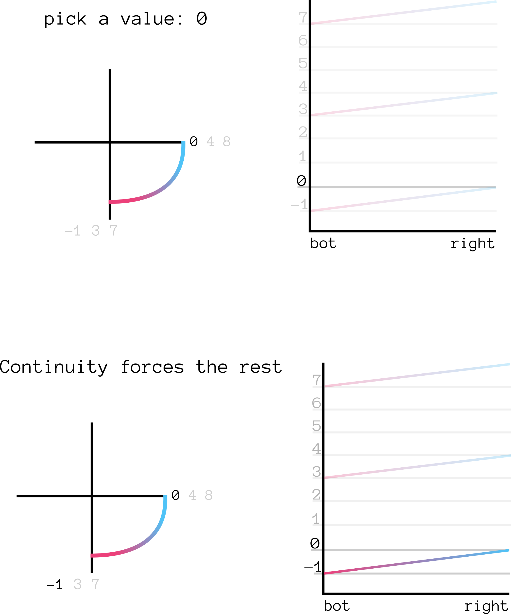
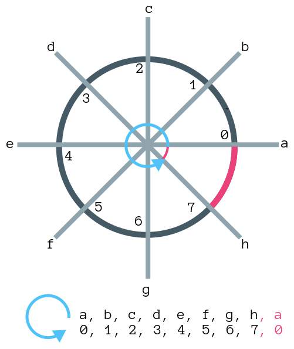

§ The arg function, continuity, orientation
Let us think of the function arg: \mathbb C \rightarrow \mathbb R as a multi valued function, which maps each complex number to the set of possible valid angles that generate it:
arg(z) \equiv \{ t \in \mathbb R : |z|e^{i (\pi/2)t} = z \}
We plot the function here:


- Note that for every value z \in C, we get a set of values associated to it.
§ Recovering single valued-ness
Now, the question is, can we somehow automatically recover single valued-ness? kind of, by stipulating that for any given curve c: [0, 1] \rightarrow \mathbb C, the function arg \circ c: [0, 1] \rightarrow \mathbb R is continuous. Let's try to investigate what happens if we move fromright towards bot,
arbitrarily stipulating ("picking a branch") that arg(right) = 0 as a sort
of basepoint.

- Note that we were forced to pick the value
arg(bot) = -1from our considerations of continuity. No other value extends continuous from the right to the bottom. - Also note that we got a smaller value: we move from
0 -> -1: we decrease our value as we move clockwise.
what happens if we move in the opposite direction?
§ Counter-clockwise movement
- Let's move counter-clockwise from
right, arbitrarily picking the brancharg(right) = 0as before. This gives us:

- Note that once again, we were forced to pick
arg(top) = 1by continuity considerations.
- Also note that this time, we got a larger value: we move from
0 -> 1: we increase our value as we move counter-clockwise
§ Multiple winding
the true power of this multi-valued approach comes from being able to handle multiple windings. Here the real meaning of being a multi-valued function shows through. If we decide to go through the the loop twice, as: ∃!id(p)
+---+
| |
| v
+---------ppppp--------+
| πa | ^ πb |
v ∃!p2q | v
a | | b
^ | ∃!q2p ^
| π'b v | π'b |
+---------qqqqq--------+
6, which can only b
§ Orientation from continuity
There's something really elegant about being able to recover a notion of "orientation" by simply:- Allowing multi-valued functions.
- Forcing continuity constraints.
- Interpreting increase/decrease in the value of the function.
§ Discretizing, gaining more insight
I was personally dis-satisfied with the above explanation, because it seemed weird that we would need to depend on the history to define this function. We can formalize this notion of history. Let's first discretize the situation, giving us: - We are on the space of the spokes, given by
a, b, c, d, e, f, g, h. - We have a function
f: Spoke -> Valwhose values are given on the spokes. - We are interested in the path
p: Time -> Spoke,p = [a, b, c, d, e, f, g, h, a]. - If we evaluate the function
fon the pathp, we getout: Time -> Val,out = [0, 1, 2, 3, 4, 5, 6, 7, 0]. - We have a "jump" from
7to0inoutas we cross fromhtoa. This is a discontinuity inoutat time7. - We want to fix this, so we make the function
fmulti-valued.

- We assign both values
8and0to the spokea. We wish to define the evaluation off: Spoke -> 2^Nrelative to pathp. At timet, pointp[t], we pick any value inf(p[t])that makesout[t]continuous.
- So in this case, when we start, we have two choices for
out[0] = f(p[0]) = f(a):0and8. But we know thatout[1] = f(p[1]) = f(b) = 1. Hence, forout[0]to be continuous, we must pickout[0] = 0.
- Similarly, at
out[8]we have two choices:0and8. But we have thatout[7] = 7, hence we pickout[8] = 8.
- Note that we say 'we pick the value' that makes
outcontinuous. This is not really rigorous. We can fix this by re-definingfin such a way thatfis notSpoke -> Val, but rather it knows the full path:f': (Time -> Spoke) -> Val.
§ Making the theory path-dependent
We originally had: ∃!id(p)
+---+
| |
| v
+---------ppppp--------+
| πa | ^ πb |
v ∃!p2q | v
a | | b
^ | ∃!q2p ^
| π'b v | π'b |
+---------qqqqq--------+
choose_best_value. So we redefine it:
∃!id(p)
+---+
| |
| v
+---------ppppp--------+
| πa | ^ πb |
v ∃!p2q | v
a | | b
^ | ∃!q2p ^
| π'b v | π'b |
+---------qqqqq--------+
- The function
f'that defines the value of the path has full access to the path itself! - At time
tcur, it attempts to pick the value inf(path[tcur])which makes the discontinuity as small as possible. It picks a valuevfrom the possible values off(path[tcur]). Thisvminimises the of the distances from the previous time point (|v - path[tcur-1]), and the distance from the next time point (|v - path[tcur + 1]). - This provides a rigorous definition of what it means to "pick a value in the branch". This can clearly be extended to the continuous domain.